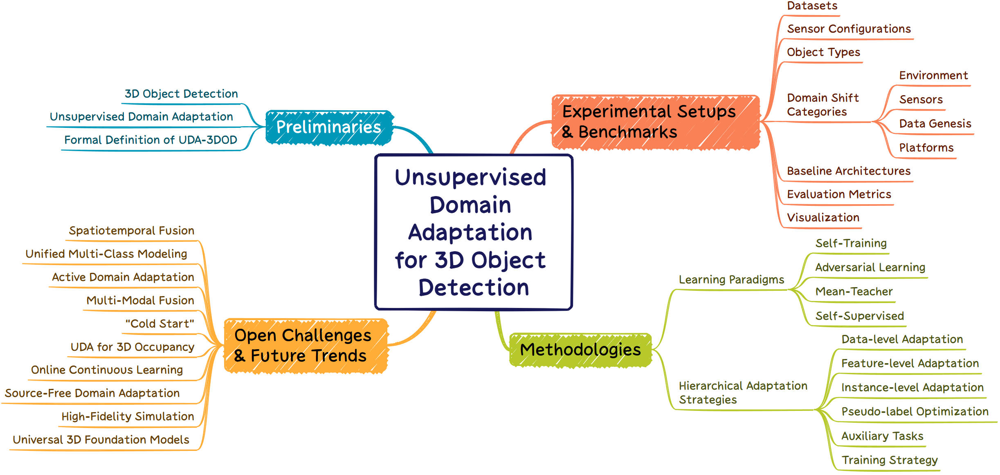

Unsupervised Domain Adaptation for 3D Object Detection:
A Comprehensive Survey
- Yinghao Sun UESTC
- Lingdong Kong NUS
- Ao Liang NUS
- Peiliang Li ZYT
- Kunpeng Gou UESTC
- Siyuan Kang UESTC
- Qinghang Zhang UESTC
- Shuguang Li UESTC
- Tieshan Li UESTC

Hierarchically-structured taxonomy of UDA-3DOD in this survey.
Abstract
3D Object Detection (3DOD) serves as a cornerstone of environmental perception for autonomous driving and intelligent robotics. Despite recent breakthroughs, 3DOD models suffer from severe performance degradation under domain shifts including discrepancies in sensor hardware, weather conditions, and geographical layouts, thereby violating the independent and identically distributed (i.i.d.) assumption. While Unsupervised Domain Adaptation (UDA) has emerged as a promising paradigm to alleviate the prohibitive cost of annotation, 3D-specific challenges such as geometric sparsity, irregular scanning patterns, and absolute scale sensitivity impede the direct transfer of well-established 2D adaptation techniques. Despite the rapid growth of UDA methods for 3DOD, the literature remains fragmented and lacks a comprehensive, dedicated survey.
This paper presents a comprehensive and systematic survey of the rapidly evolving UDA-3DOD landscape. To address this fragmentation, we first establish a unified problem space by dissecting the physical origins of 3D domain shifts and cataloging prevalent experimental protocols and benchmarks. We then organize existing methodologies into two complementary dimensions: macro-level learning paradigms including self-training, adversarial learning, mean teacher, and self-supervised frameworks; and micro-level hierarchical adaptation strategies, which encompass data-level adaptation, feature-level alignment, instance-level refinement, pseudo-label optimization, auxiliary tasks, and training strategies. This dual-axis taxonomy reveals the intrinsic methodological connections among disparate paradigms. Furthermore, this survey offers a comprehensive reference and distills ten open challenges and future trends, prioritized by their estimated difficulty, to outline a strategic roadmap for the next generation of robust cross-domain 3D perception systems.
Video
Citation
Acknowledgements
Thanks to Ricardo Martin-Brualla and David Salesin for their comments on the text, and to George Drettakis and Georgios Kopanas for graciously assisting us with our baseline evaluation.
The website template was borrowed from Michaël Gharbi.